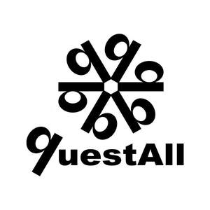

Trade Mark Journal No.2025/013 28 March 2025
UK00004172219 12 March 2025 (18,25,35)

- Class 18
- Travel bags; Waist bags; Walking sticks; Wallets; Collars for animals; Cosmetic bags; Credit card holders; Crossbody bags; Sports bags; Bags; Clothing for pets; Handbags; Imitation leather; Key cases; Leather straps; Leather, unworked or semi-worked; Luggage tags; Purses; Riding saddles; Sling bags for carrying infants; Suitcases; Tool bags, empty; Travelling bags; Trunks [luggage]; Umbrellas; Whips; Backpacks; Bags for campers; Bags for climbers; Briefcases.
- Class 25
- Wedding gowns; Clothing; Jackets; Jeans; T-shirts; Rainwear; Ties; Boots; Shorts; Footwear; Gloves; Brassieres; Coats; Dresses; Face masks [clothing], not for medical or sanitary purposes; Girdles; Hats; Headwear; Pyjamas; Scarves; Shirts; Skirts; Slippers; Socks; Stockings; Sweaters; Swimsuits; Trousers; Underwear; Belts [clothing].
- Class 35
- Advertising; Advertising services to create brand identity for others; Auctioneering; Business investigations; Business management assistance; Business management of hotels; Business management of sports people; Compilation of information into computer databases; Demonstration of goods; Direct mail advertising; Import-export agency services; Marketing; Online advertising on a computer network; Outdoor advertising; Personnel recruitment; Presentation of goods on communication media, for retail purposes; Production of advertising films; Production of teleshopping programs; Promotion of goods through influencers; Providing business information via a website; Providing commercial information and advice for consumers in the choice of products and services; Providing user rankings for commercial or advertising purposes; Providing user reviews for commercial or advertising purposes; Provision of an online marketplace for buyers and sellers of goods and services; Publicity material rental; Rental of advertising space; Sales promotion for others; Sponsorship search; Television advertising; Website traffic optimisation.
Shenzhen Andong E-Commerce Co., Ltd.
Representative: YH Consulting Limited